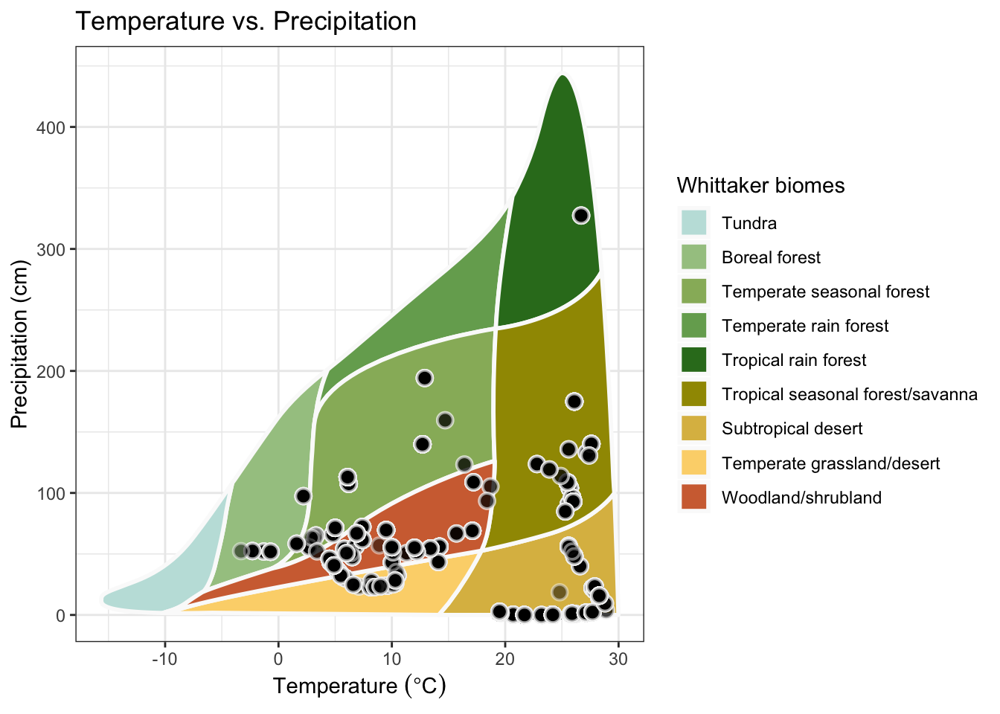

Chapter 7 Practical Examples in R
To implement these 2-D analysis techniques in R, we recommend using packages such as tidyverse, tableone, gplots, and DT for creating contingency tables, heatmaps, and interactive tables. Below, we illustrate how to construct and interpret each of these visualizations using sample data. Example 1: Creating a Simple Contingency Table
A contingency table helps summarize the frequency of two categorical variables. In this example, we cross-tabulate intervention type and region to identify patterns in research distribution.
# Load required libraries
library(tidyverse)
# Create sample data
data <- data.frame(
intervention = sample(c("Agroforestry", "Organic Farming", "Conventional"), 100, replace = TRUE),
region = sample(c("Europe", "Asia", "Africa"), 100, replace = TRUE)
)
# Create contingency table
contingency_table <- table(data$intervention, data$region)
print(contingency_table)##
## Africa Asia Europe
## Agroforestry 11 8 18
## Conventional 5 8 11
## Organic Farming 19 13 7## Africa Asia Europe
## Agroforestry 11 8 18
## Conventional 5 8 11
## Organic Farming 19 13 77.0.0.1 Example 2: Generating a Heatmap
Heatmaps are excellent for visualizing interactions or intensities. This example uses a heatmap to display intervention effect sizes across different farm types.
# Load required libraries
library(ggplot2)
# Create sample data
heatmap_data <- data.frame(
farm_type = rep(c("Small", "Medium", "Large"), each = 3),
intervention = rep(c("Agroforestry", "Organic", "Conventional"), times = 3),
effect_size = runif(9, min = -1, max = 1)
)
# Create heatmap
ggplot(heatmap_data, aes(x = intervention, y = farm_type, fill = effect_size)) +
geom_tile() +
scale_fill_gradient2(low = "red", high = "blue", mid = "white", midpoint = 0) +
theme_minimal() +
labs(title = "Effect Sizes of Interventions Across Farm Types",
fill = "Effect Size")
7.0.0.2 Example 3: Building an Interactive Table
Interactive tables are useful for large datasets that require filtering or detailed inspection.
The DT package in R makes it easy to create tables that users can sort, search, and explore.
# Load required libraries
library(DT)
# Create sample data
interactive_data <- data.frame(
intervention = rep(c("Agroforestry", "Organic", "Conventional"), times = 10),
region = sample(c("Europe", "Asia", "Africa"), 30, replace = TRUE),
effect_size = runif(30, min = -1, max = 1)
)
# Create interactive table
datatable(interactive_data, options = list(pageLength = 5, autoWidth = TRUE))